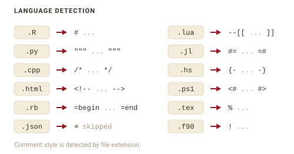
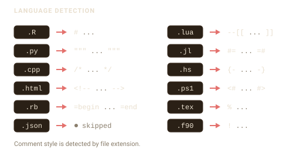

filestamp works across languages by writing each header in the comment style that language uses. It figures out the style from the file extension.
How detection works
detect_language() maps a file’s extension to a language definition. That definition carries the comment markers filestamp uses when it formats the header.


filestamp ships with definitions for many languages:
The same template produces a different header depending on the file. A Python file gets a triple-quoted block, while a C++ file gets a /* */ block:
py <- tempfile(fileext = ".py")
writeLines("def f(): pass", py)
stamp_file(py, template = "mit", author = "Jane Doe")
cat(head(readLines(py), 4), sep = "\n")
#> """
#> MIT License
#>
#> Copyright (c) Acme Corp 2026
cpp <- tempfile(fileext = ".cpp")
writeLines("int main() {}", cpp)
stamp_file(cpp, template = "mit", author = "Jane Doe")
cat(head(readLines(cpp), 4), sep = "\n")
#> /*
#> MIT License
#>
#> Copyright (c) Acme Corp 2026Files filestamp skips
When an extension is not recognized, detect_language() returns NULL and filestamp skips the file rather than guessing. This keeps it from writing a broken header. JSON is the clearest case: it has no comment syntax at all, so it is always skipped.
Some extensions are shared by languages with different comment styles, and those are skipped on purpose. .m belongs to Objective-C, MATLAB, and Mathematica; .cls belongs to LaTeX, Salesforce Apex, and VBA. Guessing wrong would corrupt the file, so filestamp declines:
is.null(detect_language("model.m"))
#> [1] TRUE
is.null(detect_language("MyClass.cls"))
#> [1] TRUEObjective-C is still supported through its unambiguous .mm extension, and LaTeX through .tex, .sty, and .Rnw.
Adding a language
Register a language filestamp does not know with language_register(). Give it a name, the extensions it covers, and its comment markers. Use comment_multi_start and comment_multi_end for languages with block comments:
language_register(
"coffeescript",
extensions = "coffee",
comment_single = "#",
comment_multi_start = "###",
comment_multi_end = "###"
)
detect_language("app.coffee")$name
#> [1] "coffeescript"Once registered, the language is available to every stamping function for the rest of the session. To make it permanent, put the language_register() call in your project startup, such as a .Rprofile.